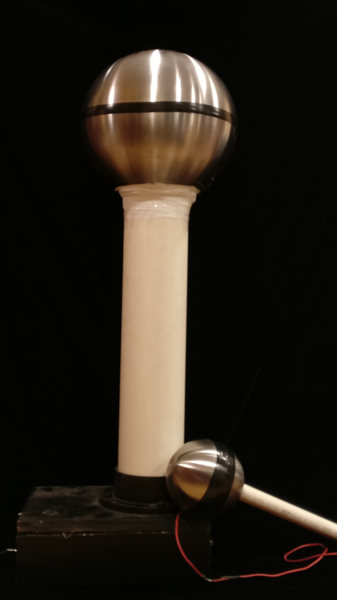

{kind=link}
{kind=link}
About
Hi there! My name is Shishir, and I'm a fan of all things astrophysics. My research mainly focuses on detecting and characterizing exoplanets with space telescopes. I also enjoy making sciencey things, playing badminton, and astrophotography.
The Making of a Lean, Mean, Lightning Machine
If you’ve ever shuffled out of a carseat on a dry day and felt the jolt of a static shock when you touch the door, you are familiar with static electricity. One of my first major projects was to construct a large Van de Graaf Generator (VDG), a machine that automates this process to generate large static discharges. Van de Graaf generators use a motor to run a belt across a set of rollers. The principle at action here is called triboelectricity, which occurs when two different materials rub against each other and one material imparts charges to the other. Most VDGs use a belt made of latex or rubber, and two different materials on each roller in order to produce large quantities of floating charges. Then, these charges are picked off of the belt and deposited onto a large sphere. Because like charges repel, the charges try to distance themselves from each other, but the sphere is the perfect shape to contain them because all points on the surface of a sphere are equidistant, so the charges can arrange themselves in such a way that they are all as far away from each other as they can get. The larger the sphere of a VDG, the more charges you can deposit, and the larger sparks you can create.
Unfortunately, we didn’t have access to giant metal spheres when we built this (we found that the best source of these was gazing globes for gardens, but they can be quite expensive). We instead used two IKEA mixing bowls that were conveniently shaped like spheres. We constructed the column out of a PVC pipe, in which we placed the belt and the two rollers. We drilled into the PVC and inserted skateboard bearings, providing a smooth axle for the rollers to rotate. We decided to use elastic resistance bands, used for exercise, for the belt. These wide and thin rubber strips turned out to be perfect for the application when the ends were glued together. We coated one roller in teflon tape and the other in nylon fabric, two materials which have opposite electronegativities. This ensures that one preferentially gives up charges and the other one preferentially takes up charges. Finally, we constructed the base from plywood, mounted a large, cheap DC brushed motor to it, and pliantly attached the motor to the bottom roller axle. We put in a switch and a variable power supply, and lo and behold, we had a working VDG!
On a dry day, this machine can generate up to 6” sparks and produces hundreds of thousands of volts of electricity (but don’t worry, it’s quite harmless). We constructed it because we thought there might be some cool things we could do with it, but I never could have imagined the breadth of demonstrations and experiments that a VDG could enable. I've used this machine numerous times in classes and other outreach events for demos in electromagnetism.
In particular, a VDG is one of the easiest ways to generate ionic wind, which is produced when charges concentrated together repel each other with such force that they fly off, ionizing the air and generating a wind of charged particles that’s quite easy to feel. This ion wind is actually quite similar to solar wind, and with some dry ice you can construct an accurate toy model of a comet. Comets are made largely of ice and solid CO2, also known as dry ice. As a comet moves through space due to the pull of the sun, a tail billows behind it and the heat of the sun sublimates the dry ice. However, comets are actually often seen with two tails. The second tail is produced when charged particles liberated from the surface encounter the ion wind from the Sun. You can see these two tails in the video below.